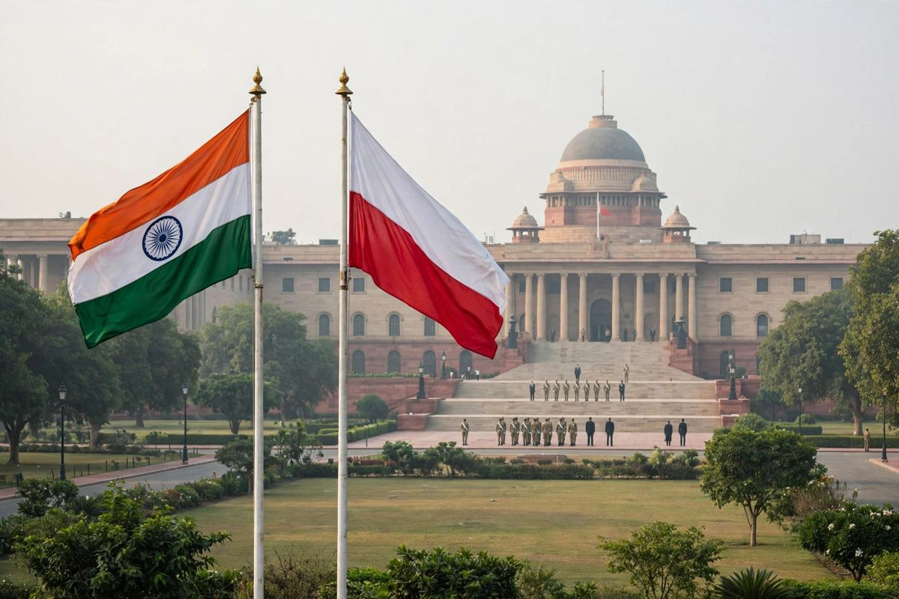

मोदी र टुस्क २०३० सम्म भारत-पोल्यान्ड व्यापार दोब्बर बनाउन सहमत, रक्षा र अन्तरिक्ष सम्बन्ध गहिरिने
नयाँ दिल्लीको हैदराबाद हाउसमा भएको वार्तापछि दुई प्रधानमन्त्रीले २०३० को व्यापार लक्ष्य तोके र रक्षा, अन्तरिक्ष, परमाणु ऊर्जा र महत्वपूर्ण खनिजमा नजिकको सहकार्य खुला गरे।

मुख्य बुँदाहरू
- प्रधानमन्त्री नरेन्द्र मोदीले पोल्यान्डका प्रधानमन्त्री डोनाल्ड टुस्कसँग नयाँ दिल्लीको हैदराबाद हाउसमा विस्तृत वार्ता गरेपछि भारत र पोल्यान्डले बिहीबार सन् २०३० सम्म द्विपक्षीय व्यापार दोब्बर…
- टुस्क अक्टोबर २१ देखि २३ सम्म भारतको आधिकारिक भ्रमणमा छन्। उनीसँग पोल्यान्डका वित्त तथा अर्थमन्त्री आन्द्रेज डोमान्स्की र ठूलो व्यापारिक प्रतिनिधिमण्डल छ। यो वार्ता सन् २०२४ को अगस्टमा मोदीको…
- नतिजा घोषणा गर्दै मोदीले दुवै पक्ष रक्षा, अन्तरिक्ष र परमाणु ऊर्जामा सम्बन्ध गहिरो बनाउन सहमत भएको बताए र ती क्षेत्रमा भारतसँग संयुक्त विकास र संयुक्त उत्पादनमा भाग लिन पोलिस कम्पनीहरूलाई निम्तो…
प्रधानमन्त्री नरेन्द्र मोदीले पोल्यान्डका प्रधानमन्त्री डोनाल्ड टुस्कसँग नयाँ दिल्लीको हैदराबाद हाउसमा विस्तृत वार्ता गरेपछि भारत र पोल्यान्डले बिहीबार सन् २०३० सम्म द्विपक्षीय व्यापार दोब्बर बनाउन र रक्षा, अन्तरिक्ष तथा परमाणु ऊर्जामा सहकार्य गहिरो बनाउन सहमति जनाए।
टुस्क अक्टोबर २१ देखि २३ सम्म भारतको आधिकारिक भ्रमणमा छन्। उनीसँग पोल्यान्डका वित्त तथा अर्थमन्त्री आन्द्रेज डोमान्स्की र ठूलो व्यापारिक प्रतिनिधिमण्डल छ। यो वार्ता सन् २०२४ को अगस्टमा मोदीको पोल्यान्ड भ्रमणका बेला दुई देशले स्थापना गरेको रणनीतिक साझेदारी र २०२४ देखि २०२८ सम्मको भारत-पोल्यान्ड कार्ययोजनामा आधारित छ।
दुई नेताबीच के सहमति भयो
नतिजा घोषणा गर्दै मोदीले दुवै पक्ष रक्षा, अन्तरिक्ष र परमाणु ऊर्जामा सम्बन्ध गहिरो बनाउन सहमत भएको बताए र ती क्षेत्रमा भारतसँग संयुक्त विकास र संयुक्त उत्पादनमा भाग लिन पोलिस कम्पनीहरूलाई निम्तो दिए। उनले पोलिस विशेषज्ञतासहित दुई देशले महत्वपूर्ण खनिज र कोइला ग्यासीकरणमा पनि नयाँ साझेदारी बनाउने बताए।
संयुक्त वक्तव्यले फराकिलो क्षेत्र समेट्यो: कृत्रिम बुद्धिमत्ता, हरित प्रविधि, महत्वपूर्ण खनिज, साइबर सुरक्षा, व्यापार, लगानी, संस्कृति र शिक्षा। नेताहरूले रक्षा उद्योग संवादले दुवै देशका रक्षा कम्पनीहरूबीचको कामलाई औपचारिक आकार दिनुपर्ने बताए, जसमा संयुक्त विकास, संयुक्त उत्पादन र प्रविधि हस्तान्तरण छलफलमा छन्।
दुवै नेताले भारत-युरोपेली सङ्घ स्वतन्त्र व्यापार सम्झौताको महत्वमा जोड दिए र यसले दुवै देशका कम्पनीहरूका लागि नयाँ व्यापार खोल्ने बताए। वार्साले सुधारिएको संयुक्त राष्ट्र सुरक्षा परिषदमा भारतको स्थायी सिटको दाबीलाई पनि समर्थन गर्यो, र दुवै पक्षले नियममा आधारित अन्तर्राष्ट्रिय व्यवस्था र विश्वव्यापी संस्थाहरूको सुधारप्रति समर्थन दोहोर्याए।
शान्ति, इतिहास र जनता
विश्व मामिलामा मोदीले भारत र पोल्यान्ड दुवैले लोकतान्त्रिक मूल्य र कानुनी शासनमा विश्वास गर्ने बताए, र भारतले युक्रेन र पश्चिम एसियामा शान्ति ल्याउने हरेक गम्भीर प्रयासलाई समर्थन गरिरहने बताए। युक्रेन युद्ध अन्त्य गर्ने अन्तर्राष्ट्रिय प्रयास जारी रहेका बेला टुस्कको भ्रमण भएको हो।
मोदीले पुरानो सम्बन्ध पनि सम्झाए। दोस्रो विश्वयुद्धका बेला जामनगर र कोल्हापुरका राजपरिवारले भारतमा हजारौं पोलिस बालबालिका र परिवारलाई आश्रय दिएका थिए। पोल्यान्डले सन् २०२२ मा त्यो ऋण फर्कायो, जब यसले अपरेसन गंगाअन्तर्गत भारतीय विद्यार्थीहरूलाई युक्रेनबाट सुरक्षित निस्कन मद्दत गर्यो।
अब के हुन्छ
भारत-पोल्यान्ड व्यापार मञ्च अक्टोबर २२ मा नयाँ दिल्लीमा र अक्टोबर २३ मा बेंगलुरुमा बस्छ। टुस्क बेंगलुरु गएर त्यहाँका व्यापारिक नेताहरूसँग भेट्नेछन्, जसमा सूचना प्रविधि र अन्तरिक्ष क्षेत्रका पनि छन्। नयाँ व्यापारका लागि दुवै पक्षले नाम लिएका क्षेत्रमा औद्योगिक मेसिनरी, पूर्वाधार, औषधि, खानी, ऊर्जा र सूचना प्रविधि छन्।
अबको परीक्षा कार्यान्वयन हो। साझेदारीसँग कागजमा योजना छ, जुन २०२८ सम्म चल्छ, र २०३० का लागि व्यापार लक्ष्य छ। दुवै देशका कम्पनीहरूले बिहीबारको वार्तालाई त्यसपछि आउने सम्झौता र परियोजनाहरूबाट नाप्नेछन्।
स्रोतहरू
भारतको विदेश मन्त्रालयको वक्तव्य र नयाँ दिल्लीबाट IANS, Nation Press र The Raisina Hills को रिपोर्टिङ।
समयरेखा
- Aug 2024मोदीले पोल्यान्डको भ्रमण गर्छन् र दुई देशले सम्बन्धलाई रणनीतिक साझेदारीमा उठाउँछन्, २०२४ देखि २०२८ सम्मको भारत-पोल्यान्ड कार्ययोजना अपनाउँछन्।
- Oct 21, 2026टुस्क वित्त तथा अर्थमन्त्री आन्द्रेज डोमान्स्की र ठूलो व्यापारिक प्रतिनिधिमण्डलसहित भारतको आधिकारिक भ्रमण सुरु गर्छन्।
- Oct 22, 2026मोदी र टुस्कले नयाँ दिल्लीको हैदराबाद हाउसमा वार्ता गर्छन् र २०३० सम्म द्विपक्षीय व्यापार दोब्बर बनाउन सहमत हुन्छन्, रक्षा, अन्तरिक्ष र परमाणु ऊर्जामा गहिरो सम्बन्धसहित।
- Oct 23, 2026बेंगलुरुमा भारत-पोल्यान्ड व्यापार मञ्च तय छ, जहाँ टुस्कले सूचना प्रविधि र अन्तरिक्ष क्षेत्रका नेताहरूसँग भेट्ने कार्यक्रम छ।
स्रोतहरू
- IANS: Polish PM Donald Tusk to visit India this week, deepen strategic partnership
- Nation Press: India-Poland Defence Industry Dialogue set up for co-development, co-production
- The Raisina Hills: India-Poland Strategic Partnership, Modi and Tusk set target to double trade by 2030
- PM Modi, Polish counterpart Tusk discuss Ukraine war as India and Poland deepen ties